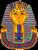

Barbara Brennan on the on the Cosmic levels "The two levels above the seventh that I am able to see at this point are the eighth and ninth levels. They are each associated with the eighth and ninth chakras located above the head. Each level appears to be crystalline and composed of very fine high vibrations. The eighth and ninth levels seem to follow the general pattern of alternating between substance (eighth level) and form (ninth level) in that the eighth appears mostly a fluid substance and the ninth appears to be a crystalline template of everything below it. I have not found references to these levels in the literature, although they may be there. I know very little about these levels, except for certain very powerful healing practices that I have been taught by my guides." [and discussed in chapter 22 of Hands of Light]The Cosmic Plane
from Barbara Brennan, Hands of Light p.54
My comments on the The Higher octaves
With the higher frequency octaves, we move beyond the limitations of the individual incarnation. These have not been mapped out as clearly as the lower faculties. Here we are at the stage at which one experiences what the Tibetan Buddhists call the Clear Light, which is of the nature of Shunyata, "emptiness".
I would tentatively assume that just as the "Astral" Body is transitional between the Physical and the Spiritual, so there would also be a transitional subtle body between the Spiritual and the transcendent. If so, this would correspond to the Qabalistic sefirah Daat, which is located in the "abyss" that seperates mundane existence (the lower seven sefirot or bodies) from the transcendent or supernal (the higher three sefirot or bodies)
And just as there may be a sort of sequence of Etheric, Emotional, and Mental on the Physical and Spiritual levels, so there may also be on the transcendent level. These would correspond to the active consciousness of the Bodhisattva or Enlightened Being, who, although beyond birth and death, still chooses to return into incarnation for the sake of other sentient beings. But in ordinary humanity these frequency levels are not developed; hence the Chaldean, Tibetan, Theosophical idea of only seven subtle bodies; from the Physical Etheric to the Spiritual Mental.
Because of the obscurity of these very elevated stages, the following correspondences are very tentative only:

with "Jesus of your being" as preceding stage?